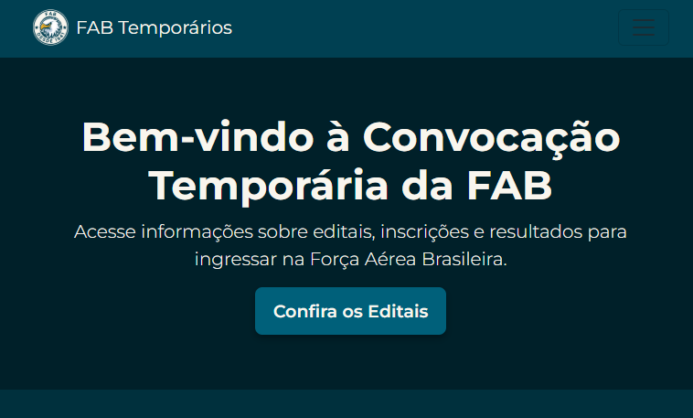

Trabalho com a criação de landing pages e sistemas web, além de participar de projetos de pesquisa e inovação na área.
Especializado em conteúdo para redes sociais, logos e identidades visuais. Crio peças audaciosas, fora do comum e memoráveis, transformando ideias em marcas fortes.
Experiência na criação e redesign de interfaces digitais, com foco em heurísticas de usabilidade, abordagem mobile-first e experiências intuitivas e eficientes.
Gerencio contas de redes sociais, criando conteúdos envolventes e estratégias para aumentar o alcance e fortalecer a presença da marca.


React + TypeScript + front-end focado em UI aplicado em uma wiki documental para o ORK, reunindo navegação clara, conteúdo estruturado e uma experiência moderna e responsiva para guias de jogo.

Front-end construído com HTML, CSS e JS, Python e padrões responsivos de interface para criar uma plataforma colaborativa de resenhas e recomendações de anime, pensada para a comunidade estudantil.

Redesign de UX/UI focado em Bootstrap, HTML, JS e CSS, além de uma interação front-end refinada para melhorar usabilidade, clareza visual e a experiência digital de um fluxo de recrutamento de serviço público.